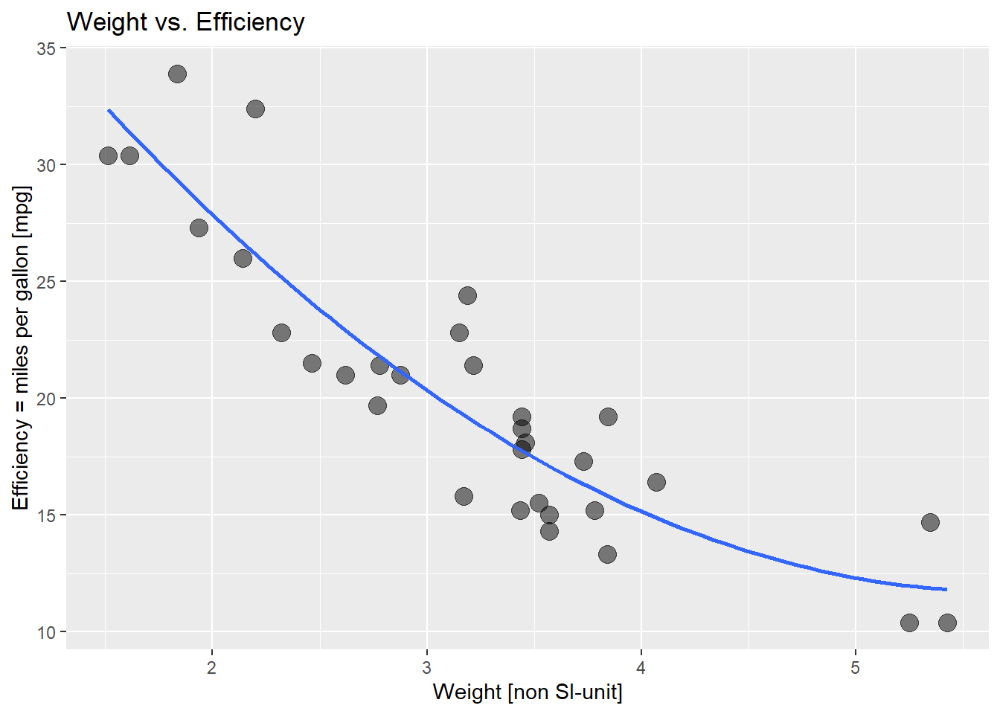

R version 4.1.1 (2021-08-10)
Platform: x86_64-w64-mingw32/x64 (64-bit)
Running under: Windows 10 x64 (build 19043)
Matrix products: default
locale:
[1] LC_COLLATE=German_Switzerland.1252 LC_CTYPE=German_Switzerland.1252
[3] LC_MONETARY=German_Switzerland.1252 LC_NUMERIC=C
[5] LC_TIME=German_Switzerland.1252
attached base packages:
[1] stats graphics grDevices utils datasets methods base
loaded via a namespace (and not attached):
[1] htmlwidgets_1.6.1 compiler_4.1.1 fastmap_1.1.0 cli_3.6.0
[5] tools_4.1.1 htmltools_0.5.4 rstudioapi_0.14 yaml_2.3.7
[9] rmarkdown_2.20 knitr_1.42 xfun_0.37 digest_0.6.31
[13] jsonlite_1.8.4 rlang_1.0.6 evaluate_0.20 myfirst_quarto
Quarto
This is my first report using Quarto. The analysis was done using:
Create and publish a graph using Quarto
Data was taken from the embedded dataset “mtcars”. The graph was created using ChatGPT.

Questions
- Assuming I wanted to create a benchmark report for all my clinics (my clinic vs. Pool) –> How would I organize my work? -master-file, invoking:
- r-script: data-import
- r-script: preprocessing of data then: loop over all departments and
3)r-script: analysis - graphs - quarto-script: publish report (as xml, pdf, )